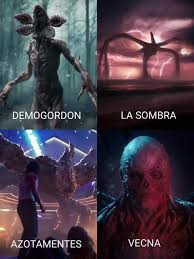

El peligro del Upside Down
El Upside Down alberga criaturas terroríficas como el Demogorgon, el Mind Flayer, Vecna y el Azotamentes. Cada uno representa un nivel de amenaza superior para Hawkins.
Estas criaturas buscan invadir nuestro mundo utilizando portales y control mental. Solo la valentía del grupo puede detener lo que se avecina.
